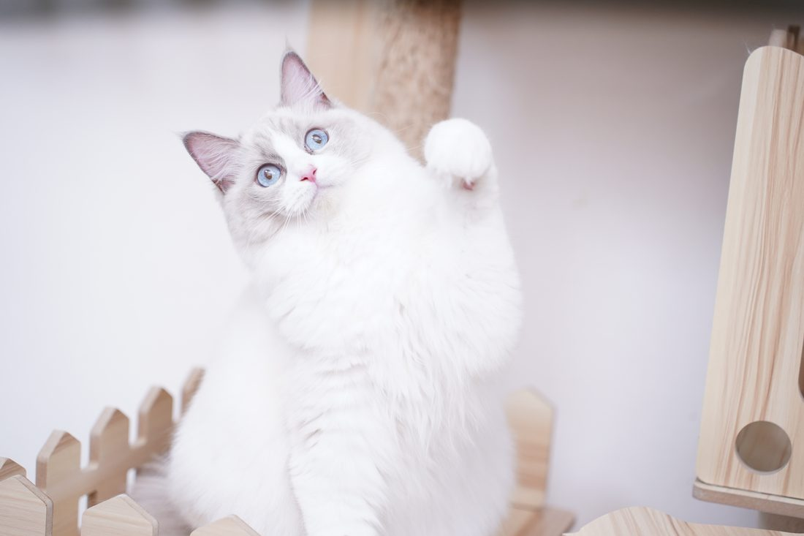
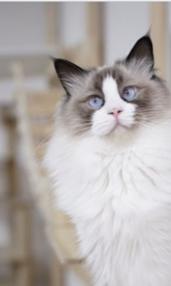
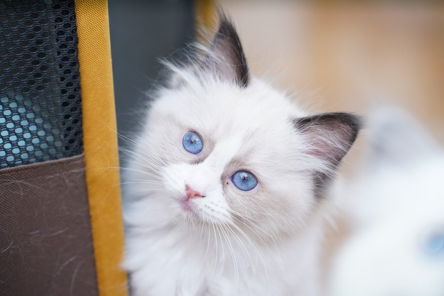
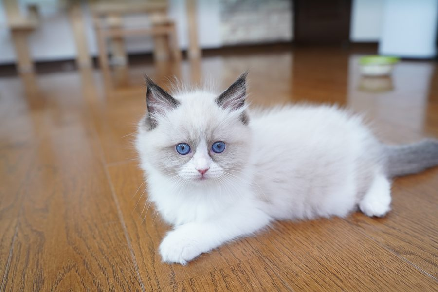
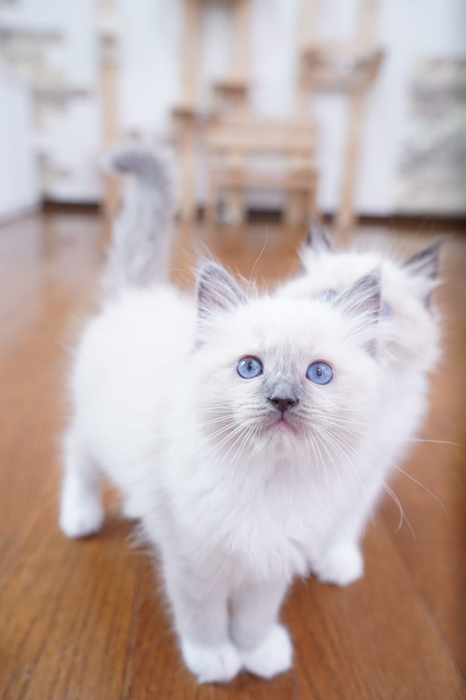

写真だけでは決めきれない
毛色や表情だけでなく、性格、生活リズム、ご家族との相性まで確認してから進められる導線にします。
Ragdoll Specialty Home Cattery
ラグドールを家族に迎えたいご家族へ。青い瞳の子猫たちとの出会いを、見学前の相談から お迎え後までていねいにつなぐ予約制ホームキャッテリーです。
初回相談は短くて大丈夫。募集状況と見学候補日を確認してご案内します。
Before Visit
子猫を迎える判断には、かわいさだけでなく、健康面、性格、ご家族との相性、迎えた後の安心が必要です。
毛色や表情だけでなく、性格、生活リズム、ご家族との相性まで確認してから進められる導線にします。
フード、トイレ、初日の過ごし方、先住猫との距離感など、見学前から質問できる入口を用意します。
相談後に何が起こるかを先に示し、見学予約、お迎え準備、アフター相談まで迷わない流れにします。
まずは「気になる」「少し不安」くらいの段階で相談できます。
見学前に相談するConversion Design
Premium版は世界観だけで終わらせず、興味から安心、見学相談まで進める営業導線として再設計しています。
子猫情報を見る行動も、最終的にはLINEまたはフォームでの見学相談へ自然につながる構成にします。
親猫、登録情報、サポートブック、巣立った子の情報を、かわいさだけで終わらない信頼材料として配置します。
見学希望、子猫の希望、相談内容を整理し、将来の予約管理や問い合わせ管理へつなげやすくします。
About Amor Alice
子猫のかわいさだけでなく、体調、性格、生活リズム、ご家族との相性を大切にしています。 ラグドールらしい穏やかさを育みながら、無理のないタイミングでご案内します。

Care Policy
写真映えするだけではなく、お迎えするご家族が納得して進めるための情報を整理しています。
体調、表情、生活リズムを見ながら、無理のないタイミングでご案内します。
見た目だけでは分からない穏やかさや暮らし方も、見学時に確認できます。
食事、トイレ、慣らし方など、はじめの不安を一つずつ軽くします。
Kitten Information
現在は掲載準備中です。気になる毛色、性別、お迎え時期がある場合は、先にLINEやフォームから相談できます。 公開できる子は写真とメモを整理して順番に反映します。

Parents
親猫の表情や雰囲気も、子猫を迎える前に知っておきたい大切な情報です。

青い瞳と落ち着いた表情が印象的な、Amor Aliceの世界観を支える親猫。

やわらかな雰囲気と品のある表情で、子猫たちの穏やかさにつながる存在。

Amor Aliceの名前を象徴するような、凛とした佇まいの親猫。
Graduates
ご家族のもとで過ごす姿は、Amor Aliceが大切にしたい関係性そのものです。

巣立った子たちの紹介は、里親様からのお便りを整理して順次掲載予定です。

写真と近況を大切に扱い、公開前に掲載許可を確認して更新します。

新しいご家族との暮らしが伝わる、あたたかなギャラリーとして整えます。
Evidence
Premium版では、相談前の不安を減らすために、見える情報と確認すべき情報を分けて配置します。
登録番号、登録日、有効期限、責任者名をフッターに明記し、公開前チェックで本人確認します。
子猫だけでなく親猫の写真と特徴を掲載し、迎える前に血統や性格の背景を知れるようにします。
見学前の確認から初日の過ごし方まで、サポートブックへの導線を用意しています。
引き渡しで終わらず、食欲、排泄、慣れ方などの変化を相談しやすい関係性を伝えます。
Adoption Journey
見学、準備、お迎え後の相談まで、流れを見通せることは大きな安心になります。 Amor Aliceでは、ご家族のペースに合わせて一つずつ確認します。
サポートブックを開く気になる子、希望時期、不安なことを短く送れます。最初から長い入力は求めません。
子猫の体調、性格、ご家族の暮らし方を踏まえて、無理なく進められるか確認します。
子猫と親猫の体調を優先し、ゆっくり話せる日程で調整します。
子猫の様子、親猫、飼育環境、お迎え後の暮らしを一緒に確認します。
フード、トイレ、ケージ、室温、初日の過ごし方まで具体的に整えます。
食欲、排泄、慣れ方など、気になる変化を早めに相談できます。
After Contact
問い合わせの不安を減らすため、見学相談後の流れを明確にします。
希望の子、見学時期、飼育経験、不安な点を確認します。
子猫と親猫の体調、予定を見ながら候補日を調整します。
当日の確認事項や、事前に読んでおくと安心な内容をお伝えします。
すぐに決めさせるのではなく、ご家族に合うかを一緒に確認します。

Support Design
いまは静的サイトとして軽く公開し、将来的には子猫情報、見学予約、問い合わせ管理へつなげられる構成にしています。
見学前の確認、お迎え準備、初日の過ごし方をPDFで整理しています。
初回相談は必須2項目を中心にし、詳しい情報は相談が進んでから確認します。
将来的に子猫情報、見学予約、問い合わせ管理へつなげやすい作りにしています。
News
かわいさだけでなく、不安解消、証拠、相談後の流れまで伝わる構成へ整えました。
必須項目を絞り、LINEやメールで相談しやすい導線へ変更しています。
巣立った子たちの近況を、掲載許可を確認しながら順次紹介していきます。
Q&A
見学前に気になりやすいことを、サポートブックの内容に合わせて整理しています。
はい。毛色、性別、時期、ご家族の生活リズムなどを聞きながら、無理なく進められるか一緒に確認できます。
はい。子猫の体調と予定を確認しながら、予約制でご案内します。まずは雰囲気や暮らし方の相談からでも大丈夫です。
相談内容を確認し、募集状況や見学候補日をご案内します。すぐに決める前提ではなく、相性や不安を整理しながら進めます。
フード、水皿、トイレ、砂、ケージ、爪とぎ、落ち着ける場所を中心に準備します。詳しくはサポートブックで確認できます。
最初の数日は静かな場所で、食事、水、トイレの様子を見守ります。子猫が自分のペースで慣れられる時間を作ることが大切です。